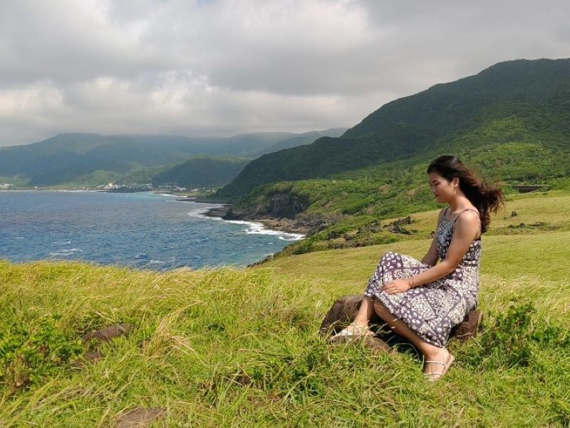
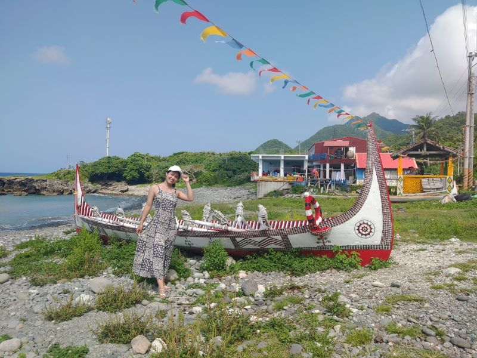

與珊瑚邂逅的蘭嶼之旅
讚嘆這座乾淨的島嶼 讚嘆若能活至百歲的四分之一人生 讚嘆此行陪同的司機攝影師 更讚嘆一切無法預期的緣分 邂逅熱情的管家、呱吉與911、被我弄到不爽咬我的白貓、三急拜託我顧店的蘭嶼居民、騎車擦身也能約山下喝酒的島民 以及，再次邂逅丟失三年的你。 蘭嶼的海絕對是我見過數一數二美，一大片活生生的珊瑚、潮間帶生物，清澈的每一段海岸線都是蔚藍碧綠，情不自禁想親手觸摸，卻又生怕觸碰便會碎裂而只能盡可能睜大瞳孔盡收眼底。 青青草原的美是壯闊卻溫馴的。遠在天邊近在眼前的招攬使我們隔天又登上一回，拍照之初抱怨狂風吹亂打結的頭髮至看見照片感謝風兒為我梳理的美麗髮型，唯一的美好遺憾便是雲層阻擋我與晚霞的碰面吧！ 東清秘境不枉秘境此名，穿越層層草叢翻越片片尖銳礁石，看見陷在礁石谷底的一片清澈平靜碧綠，只有定睛才能見熱帶魚激起的微小漣漪，下次一定會帶著面鏡來！ 滿滿的感動中參雜一絲絲哀傷，惋惜未能見的晚霞、未能見的日出、未能見的一大片星空、未能帶著面鏡一探秘境深處、未能盡情撸白貓、以及因我的任性未能完成的縮時攝影，但比起完美的旅程，我更大愛摻有些許遺憾，才會更在乎那些令自己感動的人事物，讓旅程更有韻味、更令我回味。